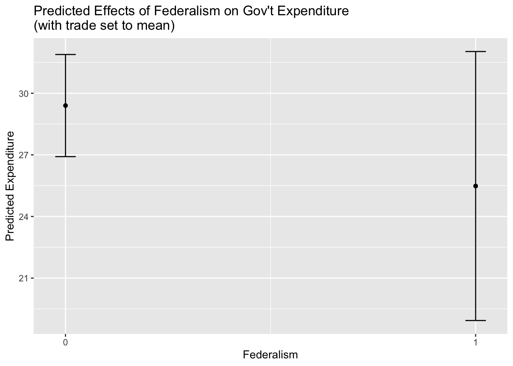

6 Elementary Data Analysis
6.1 Computing correlations
6.1.1 Computing correlations between two variables in a dataset
# Prints correlation coefficient between "trade" and "cgexp" variables
cor.test(pt_copy$trade, pt_copy$cgexp, use="complete.obs")##
## Pearson's product-moment correlation
##
## data: pt_copy$trade and pt_copy$cgexp
## t = 1.8131, df = 80, p-value = 0.07356
## alternative hypothesis: true correlation is not equal to 0
## 95 percent confidence interval:
## -0.01915884 0.39850057
## sample estimates:
## cor
## 0.19867436.1.2 Generating and exporting a correlation matrix
# Extracts variables for which we want a correlation matrix
desired_variables<-pt_copy %>% select(trade, cgexp, cgrev, catho80)# Creates correlation matrix from "desired_variables" object and assigns to object named "cor_matrix"
cor_matrix<-cor(desired_variables, use="complete.obs")# prints contents of "cor_matrix"
cor_matrix## trade cgexp cgrev catho80
## trade 1.00000000 0.1792884 0.3458730 -0.08442666
## cgexp 0.17928838 1.0000000 0.9094998 -0.07010910
## cgrev 0.34587298 0.9094998 1.0000000 -0.05923500
## catho80 -0.08442666 -0.0701091 -0.0592350 1.00000000# Exports correlation matrix assigned to "cor_matrix" object using stargazer
stargazer(matrix_to_export, type="text", title="Correlation Matrix", digits=3, out="corr_table.html")##
## Correlation Matrix
## ====================================
## trade cgexp cgrev catho80
## ------------------------------------
## trade 1 0.179 0.346 -0.084
## cgexp 0.179 1 0.909 -0.070
## cgrev 0.346 0.909 1 -0.059
## catho80 -0.084 -0.070 -0.059 1
## ------------------------------------6.2 Basic regression analysis
6.2.1 Running a regression model
# Implements regression with "gexp" as DV, and assigns to object named "regression1"
regression1<-lm(cgexp~gastil+lyp+trade+prop1564+prop65+federal+oecd, data=pt_copy)# Prints regression table
summary(regression1)##
## Call:
## lm(formula = cgexp ~ gastil + lyp + trade + prop1564 + prop65 +
## federal + oecd, data = pt_copy)
##
## Residuals:
## Min 1Q Median 3Q Max
## -12.9861 -4.6981 -0.5521 4.4482 16.1124
##
## Coefficients:
## Estimate Std. Error t value Pr(>|t|)
## (Intercept) 52.17290 16.08572 3.243 0.00179 **
## gastil -2.15202 1.10609 -1.946 0.05561 .
## lyp -2.04441 2.00721 -1.019 0.31184
## trade 0.04978 0.01924 2.587 0.01170 *
## prop1564 -0.28482 0.26686 -1.067 0.28939
## prop65 1.58627 0.33548 4.728 1.09e-05 ***
## federal -4.58101 2.38015 -1.925 0.05822 .
## oecd 0.96969 2.97171 0.326 0.74514
## ---
## Signif. codes: 0 '***' 0.001 '**' 0.01 '*' 0.05 '.' 0.1 ' ' 1
##
## Residual standard error: 7.064 on 72 degrees of freedom
## (5 observations deleted due to missingness)
## Multiple R-squared: 0.5865, Adjusted R-squared: 0.5463
## F-statistic: 14.59 on 7 and 72 DF, p-value: 1.137e-116.2.2 Working with categorical variables in a regression model
Working with categorical variables by using factors
# Set Continent variable as factor
pt_copy$continent<-as.factor(pt_copy$continent)
# Examines levels of factor variable
levels(pt_copy$continent)## [1] "africa" "asiae" "laam" "other"# Relevels factor variable to set "other" as reference category
pt_copy$continent<-relevel(pt_copy$continent, ref="other")# Run regression with the continent variable and assign result to object named "regression2"
regression2<-lm(cgexp~gastil+lyp+trade+prop1564+prop65+federal+continent+col_espa+col_uka+col_otha+oecd, data=pt_copy)
# Prints regression table for "regression2"
summary(regression2)##
## Call:
## lm(formula = cgexp ~ gastil + lyp + trade + prop1564 + prop65 +
## federal + continent + col_espa + col_uka + col_otha + oecd,
## data = pt_copy)
##
## Residuals:
## Min 1Q Median 3Q Max
## -14.3617 -3.9886 -0.3921 4.6050 17.3752
##
## Coefficients:
## Estimate Std. Error t value Pr(>|t|)
## (Intercept) 44.88833 17.56879 2.555 0.0129 *
## gastil -2.06438 1.13670 -1.816 0.0739 .
## lyp -0.12414 2.08305 -0.060 0.9527
## trade 0.03018 0.02069 1.459 0.1494
## prop1564 -0.25399 0.27421 -0.926 0.3577
## prop65 0.98675 0.45822 2.153 0.0349 *
## federal -4.73466 2.34235 -2.021 0.0473 *
## continentafrica -3.42365 4.58573 -0.747 0.4580
## continentasiae -7.72223 4.17322 -1.850 0.0687 .
## continentlaam -9.03522 4.25535 -2.123 0.0375 *
## col_espa 0.58034 8.05720 0.072 0.9428
## col_uka 2.68929 3.22769 0.833 0.4077
## col_otha -0.80223 3.02997 -0.265 0.7920
## oecd -2.37769 3.33814 -0.712 0.4788
## ---
## Signif. codes: 0 '***' 0.001 '**' 0.01 '*' 0.05 '.' 0.1 ' ' 1
##
## Residual standard error: 6.789 on 66 degrees of freedom
## (5 observations deleted due to missingness)
## Multiple R-squared: 0.6499, Adjusted R-squared: 0.5809
## F-statistic: 9.424 on 13 and 66 DF, p-value: 1.21e-10Working with categorical variables by creating dummy variables
# Use "continent" field to make continent dummy variables
pt_copy<-pt_copy %>% dummy_cols("continent")# run regression with continent dummies, with "other" category excluded
regression2_alt<-lm(cgexp~gastil+lyp+trade+prop1564+prop65+federal+continent_africa+
continent_asiae+continent_laam+col_espa+col_uka+col_otha+oecd,
data=pt_copy)# Prints "regression2_alt" regression table
summary(regression2_alt)##
## Call:
## lm(formula = cgexp ~ gastil + lyp + trade + prop1564 + prop65 +
## federal + continent_africa + continent_asiae + continent_laam +
## col_espa + col_uka + col_otha + oecd, data = pt_copy)
##
## Residuals:
## Min 1Q Median 3Q Max
## -14.3617 -3.9886 -0.3921 4.6050 17.3752
##
## Coefficients:
## Estimate Std. Error t value Pr(>|t|)
## (Intercept) 44.88833 17.56879 2.555 0.0129 *
## gastil -2.06438 1.13670 -1.816 0.0739 .
## lyp -0.12414 2.08305 -0.060 0.9527
## trade 0.03018 0.02069 1.459 0.1494
## prop1564 -0.25399 0.27421 -0.926 0.3577
## prop65 0.98675 0.45822 2.153 0.0349 *
## federal -4.73466 2.34235 -2.021 0.0473 *
## continent_africa -3.42365 4.58573 -0.747 0.4580
## continent_asiae -7.72223 4.17322 -1.850 0.0687 .
## continent_laam -9.03522 4.25535 -2.123 0.0375 *
## col_espa 0.58034 8.05720 0.072 0.9428
## col_uka 2.68929 3.22769 0.833 0.4077
## col_otha -0.80223 3.02997 -0.265 0.7920
## oecd -2.37769 3.33814 -0.712 0.4788
## ---
## Signif. codes: 0 '***' 0.001 '**' 0.01 '*' 0.05 '.' 0.1 ' ' 1
##
## Residual standard error: 6.789 on 66 degrees of freedom
## (5 observations deleted due to missingness)
## Multiple R-squared: 0.6499, Adjusted R-squared: 0.5809
## F-statistic: 9.424 on 13 and 66 DF, p-value: 1.21e-106.2.3 Working with interaction terms in regression models
# run regression with interaction term between "trade" and "federal"
trade_federal_interaction<-lm(cgexp~trade*federal, data=pt_copy)# prints "trade_federal_interaction" regression table
summary(trade_federal_interaction)##
## Call:
## lm(formula = cgexp ~ trade * federal, data = pt_copy)
##
## Residuals:
## Min 1Q Median 3Q Max
## -20.0774 -8.1325 0.5782 7.7004 21.0072
##
## Coefficients:
## Estimate Std. Error t value Pr(>|t|)
## (Intercept) 26.708234 2.517787 10.608 <2e-16 ***
## trade 0.034512 0.026410 1.307 0.195
## federal -4.695595 5.512752 -0.852 0.397
## trade:federal 0.009965 0.076991 0.129 0.897
## ---
## Signif. codes: 0 '***' 0.001 '**' 0.01 '*' 0.05 '.' 0.1 ' ' 1
##
## Residual standard error: 10.42 on 77 degrees of freedom
## (4 observations deleted due to missingness)
## Multiple R-squared: 0.05761, Adjusted R-squared: 0.02089
## F-statistic: 1.569 on 3 and 77 DF, p-value: 0.2037Plotting marginal effects
# Finds mean value of trade variable
mean(pt_copy$trade)## [1] 78.7659# Calculates marginal effects of federalism, with "trade" held at mean
marginal_effect_federalism<-ggpredict(trade_federal_interaction, terms="federal", condition=c(trade=78.7659))# Prints marginal effects table
marginal_effect_federalism## # Predicted values of cgexp
##
## federal | Predicted | 95% CI
## ------------------------------------
## 0 | 29.43 | [26.94, 31.91]
## 1 | 25.52 | [18.91, 32.12]# Plot marginal effects of federalism
ggpredict(trade_federal_interaction, terms="federal") %>%
ggplot(aes(x, predicted))+
geom_point()+
geom_errorbar(aes(ymin=conf.low, ymax=conf.high),width=0.05)+
scale_x_continuous(breaks=(seq(0,1, by=1)))+
labs(title="Predicted Effects of Federalism on Gov't Expenditure\n(with trade set to mean)", y="Predicted Expenditure", x="Federalism")
6.2.4 Creating and exporting regression tables
# Put the regression models you want in your regression table in a list
model_list<-list(regression1,regression2)# Exporting table as text file
stargazer(model_list, type="text", out="cgexp_regressions.txt")# Exporting regression table as html file
stargazer(model_list, type="html", out="cgexp_regressions.html")